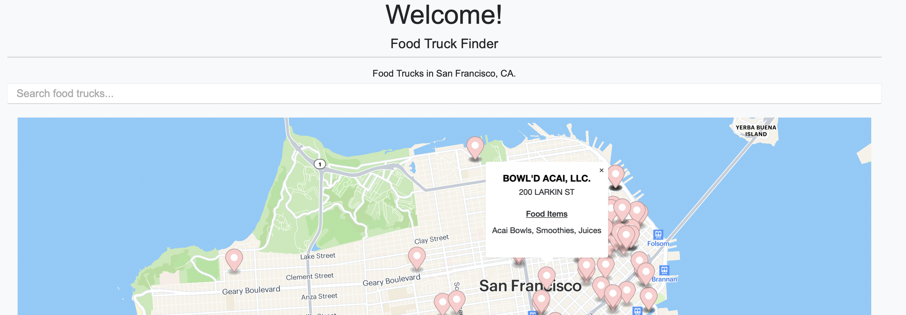

Food Truck Map
Introducing "FoodTruckFinder" - a web application that provides users with real-time information about the types of food trucks available near their desired location.
With just a few clicks, users can discover a diverse range of culinary delights on a dynamic and interactive map. You would also be able to see what type of food a specific food truck would be offering.
FoodTruckFinder utilizes HTML and CSS to create an intuitive and visually appealing user interface. The application seamlessly integrates the Radar Maps API, allowing users to explore their selected area and view the locations of nearby food trucks with ease. The integration with DataSF API ensures that the information provided is up-to-date and accurate.
Website Link: Food Truck Map.
Technologies Used: HTML, CSS, Radar Maps API, DataSF API